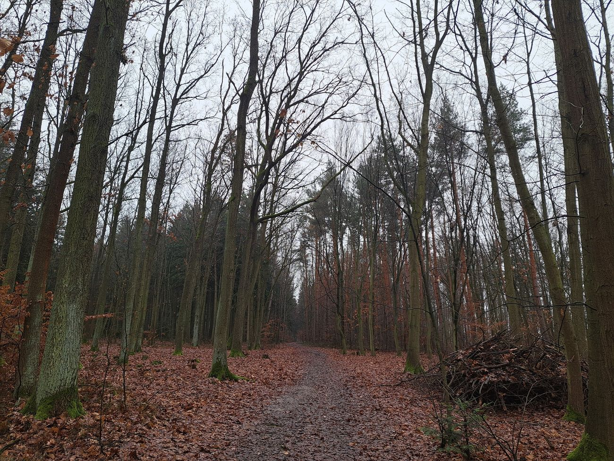
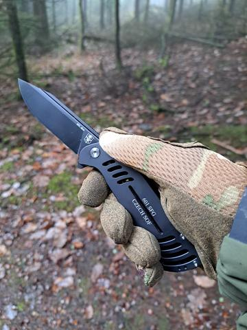
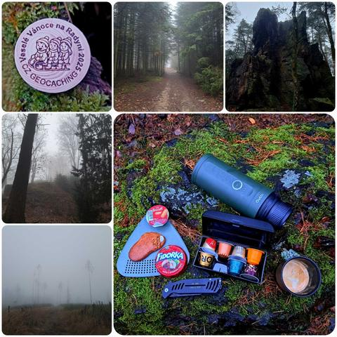

Potulka
Adventní potulka na Radyni






Původně jsem měl v plánu vyrazit na potulku a vyzkoušet BDP s bratislavskou vepřovou a bramborem. Jenže včera jsem zjistil, že se na Radyni koná geocachingový event Veselé Vánoce na Radyni 2025. (Geocaching je hra na pomezí turistiky a dobrodružství – pomocí GPS hledáte schránky, tzv. cache, a často se u toho potkáváte s dalšími „kačery“ na podobných akcích.)
Ráno mě přivítalo mlhavé počasí a tři stupně nad nulou. Přesto jsem byl rozhodnutý po obědě vyrazit. Po poledni se mlha zdvihla a vypadalo to, že bude klid. Sraz byl na výchozích souřadnicích ve 13:15, ale protože se ani do 13:20 nikdo neukázal, vydal jsem se na cestu solo.
Čím výše jsem stoupal, tím níže se mlha tlačila. Hustá tak, že by se dala krájet. Šel jsem částečně po žluté turistické značce, částečně nabližkama. Nejprve jsem se zastavil v Otýsově lomu (Slunečné údolí) , po chvíli jsem dorazil ke Svatební stěně ale byl vidět jen obrys. Pak jsem pomalu dorazil až na Radyni. A tam se děla zvláštní věc – nikde nepršelo, jen tady. Mlha kondenzovala na jehličí a smáčela prostor pod stromy.
Event jsem tu navštívil naposledy před 12 lety, v roce 2013 – nostalgie jak vyšitá. Po hodince povídání se kačeři rozprchli do tepla domovů či blízké restaurace a já se vydal zpět. Jak je mým zvykem, zastavil jsem se na Andrejškách, dal si svačinu a hlavně presso z outinu, které při dnešním počasí přišlo opravdu vhod.
Pak už jsem pokračoval šeřícím a mlžným lesem k domovu. Stmívá se brzy, a tak jsem dorazil až za tmy – s pocitem, že adventní potulka spojila turistiku, zimní náladu i geocachingové setkání v jeden příběh.
Na webu jsou vybrané fotky. Všech 25 fotek z této potulky najdete na Facebooku BCT Survival.